http://jameswxx.iteye.com/blog/2096461 总结得最详细
http://blog.ihipop.info/2011/01/2053.html
简单概括为
1) 修改/etc/security/limits.conf 里的值
2) sshd的配置文件(例: /etc/ssh/sshd_config)应有以下两条
UsePAM yes
UseLogin yes
3) 检查以下三个文件(通常 /etc/pam.d/sshd就应有效)
/etc/pam.d/login
/etc/pam.d/system-auth
/etc/pam.d/sshd
是否已有以下内容
session required pam_limits.so
(必要时也可以指定详细路径,如/lib64/security/pam_limits.so)
另外确保/etc/pam.d/system-auth文件有下面内容
session required /lib/security/$ISA/pam_limits.so
这一行确保系统会执行这个限制。
4) 最后,不要在其他文件写死了ulimit，比如:ulimit -n 65535
字段含义
https://www.ibm.com/developerworks/cn/linux/l-cn-ulimit/index.html
/etc/security/limits.conf配置格式如下：
- --代表软硬两种限制

关于修改了/etc/security/limits.conf, 从会话可见新设置的值,但程序仍可能会引起问题的情况
https://access.redhat.com/solutions/30316
红帽官方文档提到 90-nproc.conf, 但感觉依然没有足够强调 90-nproc.conf 对生效值的机制. In Red Hat Enterprise Linux 6, there's a default setting in /etc/security/limits.d/90-nproc.conf. Change the default limit for all users or add a new limit for the affected user.
Root Cause The user fails to log in because an EAGAIN error occurs if the user's number of executing threads has reached the nproc resource limit.
Note: Despite the name, this is a limit on threads, not processes.
This error may occur if user's nproc limit is set to /etc/security/limits.conf.
In Red Hat Enterprise Linux 6, this error occurs even if the limit is not explicitly set because the default configuration for all users is set in /etc/security/limits.d/90-nproc.conf.
https://www.cnblogs.com/lsdb/p/7526448.html
RHEL6.x版本后引入/etc/security/limits.d/90-nproc.conf用于限制用户打开进程数，与limits.conf的关系是： 如果90-nproc.onf与limits.conf存在相同条目的配置那么90-nproc覆盖limits.conf的配置 但是如果90-nproc.conf用的是*没有指定用户而limits.conf指定用户那么90-nproc的限制不生效. 其实90-nproc.conf除了限制nproc其他资源一样可以限制，生效原则与nproc一样 其实在/etc/security/limit.d目录下你还可以创建其他任意名字的.conf文件，这些文件中首字母ACSII大的覆盖首字母ASCII小的（首字母一样大的比较第二个字母以此类推）
亲测的几个结论
https://www.cnblogs.com/lsdb/p/7526448.html 对此文章观点的验证
- 结论1:
在RHEL 6上, 90-nproc.conf的存在
* soft nproc 1024
的情况下, 在/etc/security/limits.conf文件中添加
* - nproc 65535
不会改变普通用户的"max user processes"即nproc值,此时sshd进程和操作系统分别进行过重启,结果都相同.
此点与我们在生产环境看到的效果不同, 生产环境同样的配置方法,su到weblogic下,ulimit -u看到的max user processes的值是生效的,为65535,但依然出现can not set id: resource temporarily unavilable, 使用ps -u weblogic -L 统计weblogic用户总的线程数为1025
- 结论2:
nproc, 即ulimit命令看到的max user processes的值,对应的是该用户的所有进程+线程的总数,不能只以ps看进程数为参考,要以ps -u 用户名 -L统计该用户的计数为准.
测试方法
1) python代码创建一个无限循环的函数,使其永远不结束
2) 主函数以多线程方式调用该函数,数量1300个---为超过1024
3) 执行python代码---代码抛出异常: thread.error: can't start new thread
4) 此时统计该用户的线程总数, ps -u test -L | wc -l, 值为1025. 与生产环境所见结果相同.
python代码截图
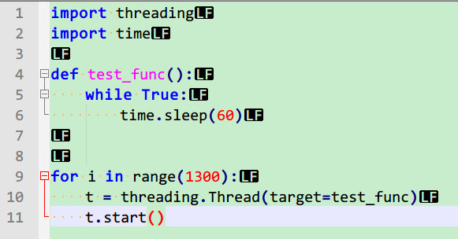
执行过程抛异常截图
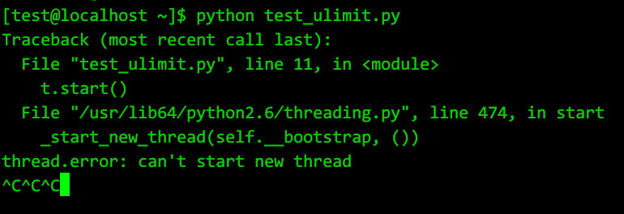
此时统计”test”用户的线程数截图
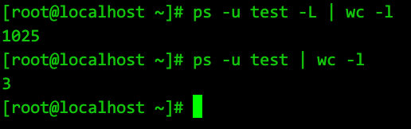
- 结论3:
/etc/security/limits.conf 与 /etc/security/limits.d/90-nproc.conf 的相互关系
1) 说法: 如果90-nproc.onf与limits.conf存在相同条目的配置那么90-nproc覆盖limits.conf的配置
测试结论: 说法正确
测试方法
/etc/security/limits.conf 与 /etc/security/limits.d/90-nproc.conf 都配置
“* -nproc”项, 但值不同,一个2048,一个65535
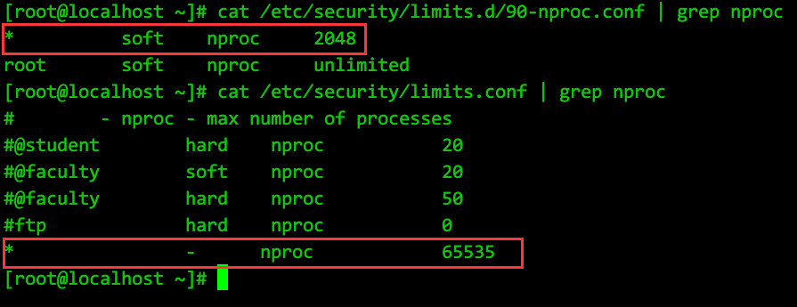
此时重新su 到 test用户,会话可见值为2048
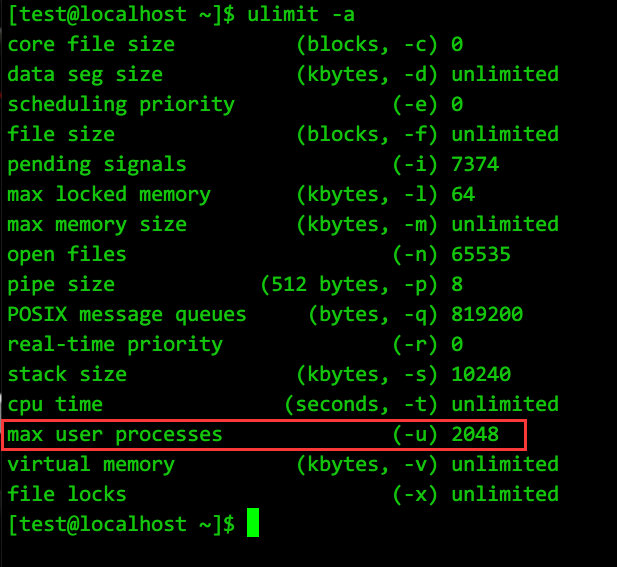
python代码实测,创建线程数为2500---为超过2048 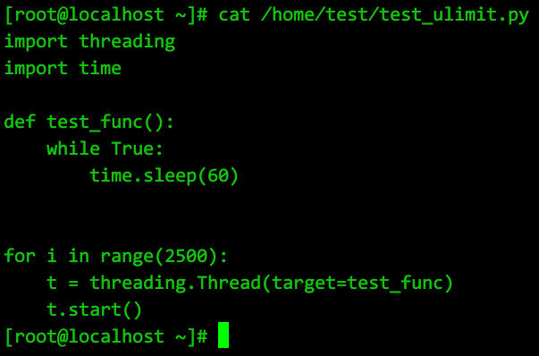
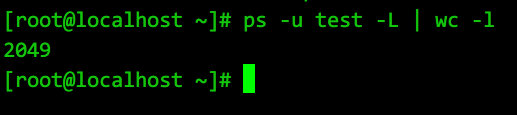
2) 说法: 但是如果90-nproc.conf用的是*没有指定用户而limits.conf指定用户, 那么90-nproc的限制不生效
测试结论: 说法正确
测试方法
/etc/security/limits.d/90-nproc.conf 保持 “* soft nproc 2048” 不变
/etc/security/limits.conf 同时存在两条
* -nproc 65535
test -nproc 10240
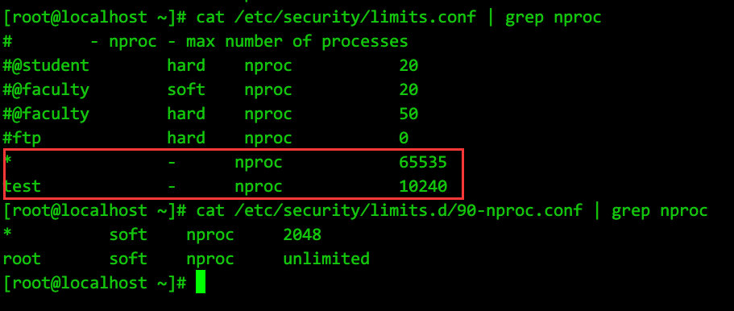
此时,su到test用户,可见值为10240
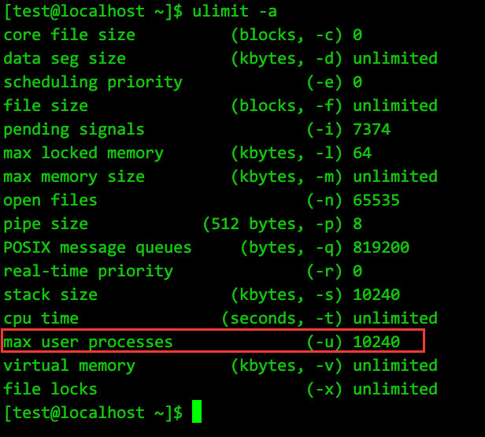
python代码实测,线程数13000---为超过10240
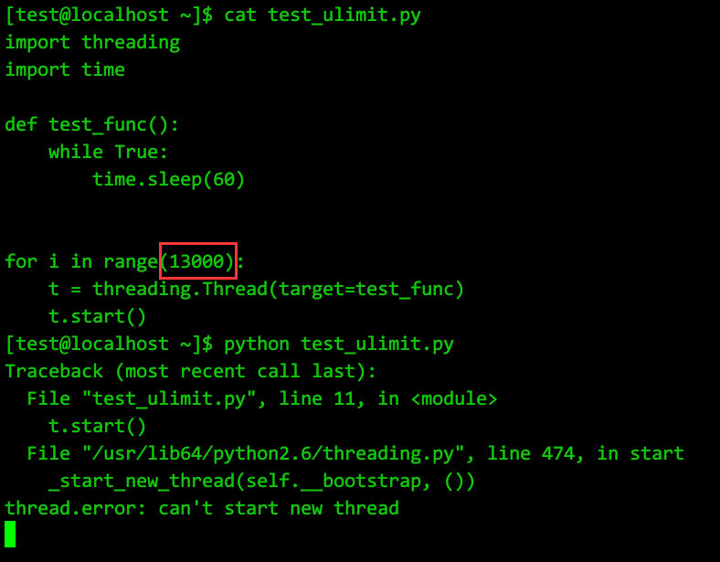
此时test用户的线程总数10241
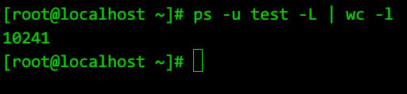
综上:
1) 如果不希望改变/etc/security/limits.d/90-nproc.conf的内容, 则需要改大nproc时,在/etc/security/limits.conf 中就必须明确指明用户名, 如:
weblogic -nproc 65535
2) 反之,
注释 /etc/security/limits.d/90-nproc.conf 中的 “ * soft nproc 1024”
和
删除(重命名) /etc/security/limits.d/90-nproc.conf 文件
都可以使 /etc/security/limits.conf 中
以” * -nproc 65535”方式配置的值生效
3) RHEL 7不存在90-nproc.conf,但存在/etc/security/limits.d/20-nproc.conf, 机制相同,默认值由1024变为了4096